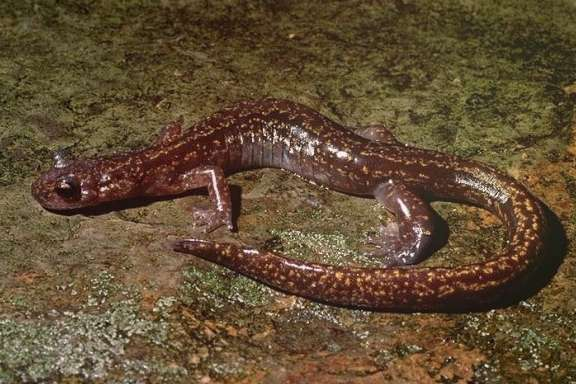
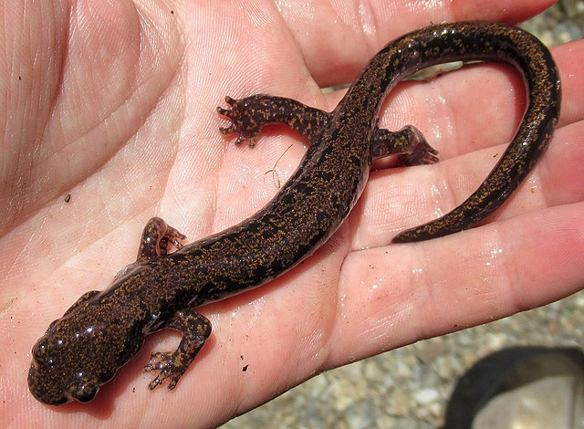
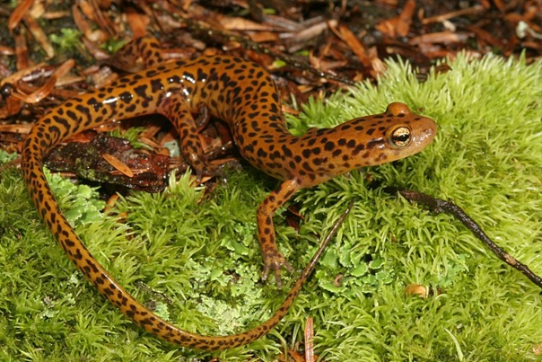

Длина тела с хвостом 125-184 мм. Легких нет. Серии сошниковых зубов в форме 2 непрерывных дуг, разделенных небольшим промежутком. Кожа гладкая. 14-15 реберных борозд на каждой стороне тела хорошо развиты. Тело цилиндрическое, вытянутое, несколько короче хвоста. Верх бурый или буро-сероватый, с темными пятнами и продольной коричневатой или золотистой полосой неправильной формы, которая может быть разбита на пятна. На пальцах темные коготки. В отличие от самки, у самца на задней ноге кожная складка между 5 пальцем и голенью; конец хвоста округлый, а не заостренный.
Вид высоко специализирован по типу биотопа – приурочен к чистым холодным ручьям в смешанных лесах на склонах сопок. Необходимым условием является наличие толстого слоя камней, заросших мхом, сильное затенение и высокая влажность берегов. Тритоны выбирают части ручьев с минимальной продолжительностью солнечного освещения, максимальной мощностью слоя щебня на дне, наличием многочисленных укрытий, непромерзающих бочажков воды и подземных источников. Степень привязанности взрослых особей к воде меняется в течение сезона активности. Зимует в истоках и у уреза ручьев. Откладка икры с конца весны в течение всего лета, в подземных частях ручьев. Личинки первое время развиваются в этих подземных источниках, затем выходят в сами ручьи. Эмбриональное и личиночное развитие занимают несколько лет. Метаморфоз сильно растянут во времени.
Охраняется в Лазовском, Сихотэ-Алинском и Уссурийском заповедниках; возможно, имеется в заповеднике Кедровая Падь. Попытки искусственного разведения безуспешны, максимум, чего удавалось достичь – спаривания и откладки икры самками, отловленными в природе после зимовки, после гормональной стимуляции. Необходимо избегать разрушения и загрязнения горных ручьев в юж. Приморье. Места с высокой численностью тритона не следует предавать огласке: в связи с высокой специализацией по местам обитания, популяции могут быть выловлены в течение 1-2 сезонов. Следует создавать локальные заказники; наладить искусственное разведение вида; проводить разъяснительную работу с местным населением.